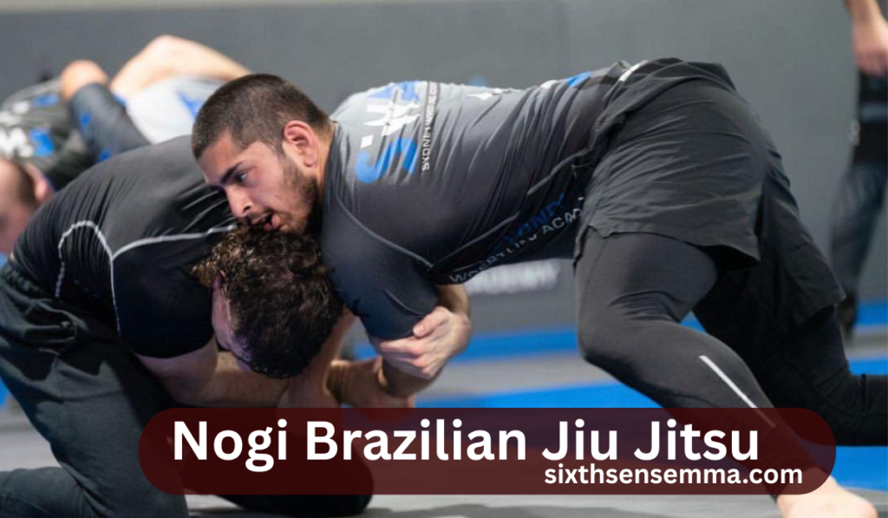
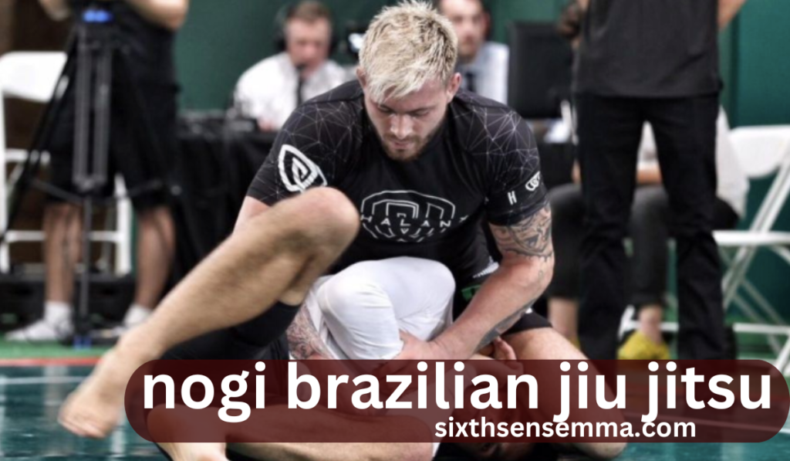

Nogi Brazilian Jiu Jitsu in 2025: Exploring Its Powerful Training Secrets

Introduction
In 2025, Nogi Brazilian Jiu Jitsu stands at the forefront of grappling evolution. With its grip less mechanics, speed-driven transitions, and tactical intensity, it has become a cornerstone of competitive MMA and submission fighting. Athletes now prioritize Nogi techniques for their fluid adaptability, dynamic movement, and real-world application. Training methodologies are rapidly advancing, shaped by bio mechanics, data analytics, and high-level global competition.
What is Nogi Brazilian Jiu Jitsu?
Without the classic gi, or kimono style outfit, which is a uniform, Nogi Brazilian Jiu Jitsu can still be done. Participants use compression shorts, rash guards, or spats instead. This style profoundly differs from the use of grips on collars and sleeves. Practitioners depend more on speed, athleticism, and body position instead of head control grappling.
Attire Shift: These garments lack the lapels and collars so control is accomplished with body locks, frames, and underhooks.
Technique Impact: Movements tend to be less restricted so they become more fluid while reliance on explosive actions intensifies.
Popularity Boost: Athletes from different disciplines have already been absorbing nogi due to MMA and submission-only contests.

What is Mixed Martials Arts (MMA)?
MMA, or mixed martial arts, refers to a full-contact sport that has combined elements from fighting, including striking techniques and grappling. MMA fighters possess a variety of skills from different disciplines such as Muay Thai, Boxing, BJJ, Wrestling, Karate, and Judo.
Main Characteristics of MMA:
- Adaptability: Incorporates both striking and grappling techniques.
- Practical Use: Conditions athletes for uncertain real-life self-defense situations.
- Multidimensional Fighting: Encompasses take downs alongside other offense and defense strategies within a single discipline.
- Impact on Nogi BJJ: A good number of MMA fighters employ nogi brazilian jiu jitsu as a primary part of their grappling approach.
Differences Between Nogi and Gi
To understand why athletes prefer one type of training over the other, it’s helpful to look at gi and nogi.
Grip Game: In gi, there are collar chokes, sleeve grips, and lapel control. In nogi, these grips aren’t present, allowing for faster scrambles and more wild bottom movements.
Tempo: Gi matches are ordinarily slower with greater focus on strategy. Nogi is defined by fast-paced action, quick submissions, and fluid movements.
Real World Use: Nogi is more representative of actual grappling situations because of how people normally dress.
The Origin of Nogi Brazilian Jiu Jitsu
Like traditional Brazilian Jiu Jitsu, Nogi BJJ also has a history. While nogi may seem newer than its gi counterpart. It began gaining prominence as an athletic format, Nogi slowly began attaining popularity over time.
Origin Story: Grapplers began readily adapting their training routines for MMA and no-gi competitions somewhere in the late 90s and early 2000s.
Influential Athletes: Both eddie bravo and Marcelo Garcia revolutionized year modern not nogi styles.
Wrestling Influence: There is always a strongly perceived crossover between submission grappling and freestyle wrestling. the same can be said for positional control and the take down strategy.
Why is Nogi Supplementing Popularity in MMA
Nogi tactics largeley influence an opponent’s movement control in MMA as there is no gi, increasing dependency on body positioning, leverage, and speed. The grappling skills developed through nogi training, such as clinch control, scrambles, and positional dominance, are of great rhythmic combat value as they allow fighters to control the fight sans grips.
MMA Relevance: There is also the need for quick and decisive power take downs and escapes along with grip less submissions.
Technique Crossovers: Moves like guillotines, body lock passes, and submission from the back are easily applicable in MMA settings along with rear naked choke.
Well Known Fighters: Demian Maia, Charles Oliveira, and Brian Ortega are some of the many fighters that have displayed demonstrate the effectiveness of nogi techniques in the cage.
Essential Techniques which are Unique to nogi brazilian jiu jitsu
Nogi, without the option of fabric gripping, gives greater importance to certain submissions or setups such as to the spokes in a wheel.
My Favorite Goes: My go-to choices are arms drags, guillotines, and leg locks.
Strategy: Rather than grips, jet practitioners utilize head control, under hooks, and over hooks.
Anticipation: Reaction times need to be markedly sharper to keep up with the quicker and more unpredictable attacks.
Steps on How to Avoid Common Mistakes in No Gi for Beginners
Every white belt has gone through one of these mistakes. Avoiding simple mistakes will save a lot of time and anger.
Muscling Through: Depending on strength instead of position is a recipe for exhaustion and getting countered.
Submitting in a Clinch Too Prematurely: Snapping someone into a hold without adequate placement always gets out of control.
Ignoring Control: A position will always beat a submission, but each should be mastered first.

Comparison of Gi and Nogi: Difficulty.
Arguments can be made for and against both styles. Each has its difficulty for sure.
The Cardio Conflict: A larger amount of stamina is needed for the faster paced nog, making it more difficult.
Different Primary Strategy: Making grips is the focus of a gi match, while action and a perfect moment are the focus of a nogi match.
Skill Level: Most novices find nogi less constricting, but harder to control in.
Gi to Nogi BJJ: How to Switch Styles without Choreographing Messy Transitions
Even highly skilled grapplers can find switching styles disorienting.
Grip Habits: Modifications for those used to grabbing sleeves include switching to wrist control, under hooks, and frames.
Movement Style: Looser engagements and faster escapes will be the new norm.
Helpful Drills: Work on drills that aim at specific problems of control, transition, and scramble.
Strength and Conditioning For Nogi Practitioners
Practitioners ofnogi brazilian jiu jitsu require different forms of training to meet their unique physiologic needs.
Explosive Power: Sprawls, shot entries, and scrambles all require strength to perform.
Core Stability: Helps maintain balance and prevents being swept off easily.
Endurance Training: Demands exceptional conditioning as high-paced cardio is needed.
The Role of Wrestling In Nogi BJJ
Wrestling goes hand with hand with nogi, participants started using it right away.
Sprawl Defense: Vital for halting attempted take downs.
Clinch Work: Hand control is critical to effective positions to control the fight.
Top Pressure: Remaining heavy on the opponent as they attempt to turn is a common part of dominantly controlling the ground nogi fighters appreciate.
What To Wear For Nogi Training
Keeping training effective while maintaining cleanliness can be achieved through proper attire.
Rash Guards: Help decrease infections of the skin while also aiding mat burn.
Compression Shorts Or Spats: Aid in muscle recovery by decreasing friction.
Stay Away from Over sized Apparel: Over sized apparel such as baggy shorts or shirts can cause snagging which poses a risk.
Nogi Submissions: Fast, Slick, and Dangerous
Submissions are done from the sides and immediately, unlike in traditional nogi which requires the use of swift movements that are hard to catch.
- Common Finishes: A favorite is guillotine, darce choke, and the aguijon.
- Quick Traps: Lack of sleeves or collars provides easier ways to catch opponents.
- Submission Chains: Attacks are often made one after the other without pauses in-between.
How to Build a Nogi Only Game Plan
Some athletes only play nogi brazilian jiu jitsu. This decision is reflected in their game plans.
Position Preference: Play styles that involves movement like attacking from butterfly guard and knee shield.
Submission Focus: Dominates in attacks on legs and front head-lock series of all is the bypassed head in nogi.
Training Structure: Focus on more of the moves on the scrambled, the entries and the drill without the grips.
Competition Rules for BJJ Nogi
For different martial arts, these can be very broad which makes it sign in for them to dissever-and stay in the know.
| Organization | Points System | Legal Techniques |
|---|---|---|
| IBJJF Nogi | Yes | Limited leg locks |
| ADCC | Yes (after 1st half) | Heel hooks allowed |
| Submission-Only | No points | Win by submission only |
BJJ No Gi and the Impact on your Self Defense Skills
Many parents conceptualize that nogi is much more relevant to real life scenarios.
Clothing Match:Everyday apparel in nogi Brazilian Jiu Jitsu does not offer the same grips as a traditional Gi.
Escape Based Approach: Nogi focuses on expedient recovery and returning to an upright position.
Realistic Engagement: Slippery and erratic movements more accurately depict real life as opposed to sporting activities.
ALSO READ THIS BLOG : Martial Arts Kali Sticks: Techniques, History, and Benefits
Mental Challenges Associated With Nogi Practice
Reduced grip control paired with increased scrambling leads to rapid mental fatigue.
Focus Maintenance: Remaining calm during rapid exchanges of action improves mental acuity.
Exasperation Control: Permit for unanticipated submission failures and unexpected reversal attempts. • Mindset Tips: Learn to embrace chaos and train while feeling fatigued for advancement.
Best Exercises for Better Performance Nogi
Would you like to see results within a short time? Practice these frequently.
Positional Rounds: Begin in side control, mount, or back control dilemma and attempt either escapes or finishes.
Scramble Drills: Recover guard by escaping when caught mid-transition.
Movement Work: Fluidity is enhanced by the practice of shrimping, granby rolls, and hip escaping.
Nogi and Leg Lock Culture: A Deep Dive
The past decade witnessed a dramatic increase in the use of leg locks with the implementation of nogi training.
Heel Hook Craze: Dominating submission in elite level nogi brazilian jiu jitsu matches.
Contest: Though some describe it as risky, others consider that it is very effective when it is practiced responsibly.
Defense Training: Learning to protect yourself is as important as knowing how to attack.
Is Promotion Possible in Nogi?
BJJ promotions are typically centered around the gi, so nogi is still relatively new in these terms.
No-Gi Belts: Certain gyms and affiliations grant promotions based solely on nogi brazilian jiu jitsu performance.
Recognition: Promotions are sometimes granted based on winning tournaments, time served on the mat, and even teaching.
Legitimacy: Progression within the nogi scene is advancing rapidly as there are many systems already in place.
Is This the End of An Era of Nogi in BJJ?
Nogi Brazilian Jiu Jitsu has become popular within the sport as time goes by.
Less Bulky Gear
Unlike traditional gis, rash guards and compression shorts are simple to manage, wash, and maintain. This makes nogi more available to those that are new to the sport, as well as seasoned athletes that train often.
Integration from MMA
Many fighters learn nogi brazilian jiu jitsu at the start of their careers due to the widespread popularity of MMA. Since MMA does not use a gi, nogi turns directly to octagon fighting.
Increased competition
The rise in nogi is due to large competitions like the ADCC (Abu Dhabi Combat Club) and submission-only competitions such as the EBI (Eddie Bravo Invitational).For example, attendance and live-streaming records were achieved during ADCC 2022, which underscores the mainstream appeal of nogi competitions.
Popularity Among Beginners
Now that your reflexes are on point, you have functional strength, you’re a few steps ahead of the competition, and you’re ready to build on your journey, nogi Brazilian Jiu Jitsu might just be the perfect fit for you on the mats.
Commercial Shift
Major brands in BJJ are now launching specific clothing lines for nogi, which means some BJJ schools have started to offer more nogi classes than gi classes.
Surge In E-Learning
BJJ Fanatics, for instance, claims that there is a growing supply of nogi brazilian jiu jitsu instructional videos with the most popular being those that feature leg lock systems and scramble approaches.
Training Versatility
For multi-discipline martial artists, nogi is certainly more appealing as it permits easier integration with training in judo and wrestling which do not require any grips.
Conclusion
Finally, for those training in Mixed Martial Arts (MMA) and seeking glory, interested in refining self-defense capabilities, or those simply searching for ways to workout, Brazilian Jiu Jitsu nogi style gives the new dimension that is active, functional, and ever-changing. With no grips, control is lost, hence movement becomes the top priority which adds to the complexity of dealing with nogi. It is not just a variation of Jiu Jitsu, it is a fully-fledged discipline. Although at first, it can be quite demanding, the course of perseverance, imagination and tenacity will make it easy to achieve.
Now that your reflexes are on point, you have functional strength, you’re a few steps ahead of the competition, and you’re ready to build on your journey, nogi Brazilian Jiu Jitsu might just be the perfect fit for you on the mats.
FAQ’s
Nogi tends to be faster and more dramatically chaotic than Gi, due to the absence of grips and friction that arise from a kimono.
Not always. There are variations such as ADCC and IBJJF Nogi that have their own rules around leg locks and scoring.
The majority opinion is that nogi brazilian jiu jitsu is better because it mimics real-life scenarios more accurately since you won’t be grabbing a jacket or sleeves during a fight.
Yes, one is bound to come across this scenario and it inherently improves your overall development as a grappler.
This is true, some academies cater more to MMA athletes or modern submission grappling who often pay more attention to Nogi than to traditional Gi.
Yes, athletes who have an explosive theatrical way of moving coupled with wrestling tend to settle into Nogi more easily than other types of grappling.
For sure, nogi Brazilian Jiu Jitsu does give greater freedom for leg attacks, particularly for heel hooks in many submission-only formats.
In Nogi, the sleeve and collar grips are substituted with underhooks, overhooks, body locks, wrist control, and tie up’s for the neck.
In Nogi, many people’s speed, timing, and agility are put to greater use and so it tends to be more frictionless for grips.
Effective Nogi submissions include guillotines, rear naked chokes, kaymiles, arm triangles, and leg locks.
Train with us in Coppell
The first class is free. Shorts, a t-shirt and a water bottle. We lend the rest.
Book a free class